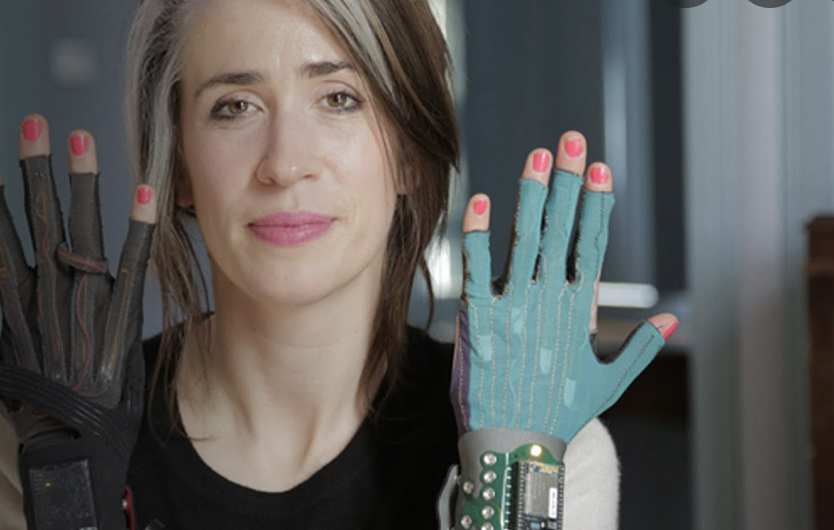
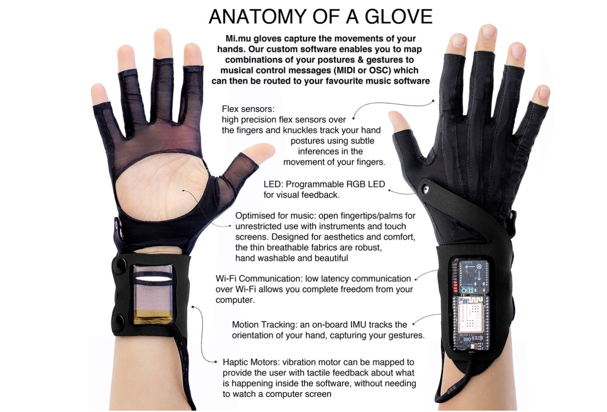

Description: Music is a universal medium for us to express and experience human emotions. Have you ever been to a restaurant and cafe where the music it plays synchronises with your current mood and thoughts, as if its like a BGM of your personal movie?
Emotionify is an add-on wearable extension that can be connected to music apps like Spotify, which consists of a set of wireless earphones with sensors. It is like a mini music station that maps user’s real time emotional brainwaves to corresponding music that matches with a specific emotion to show user’s current feeling. Users can choose to listen to each other’s live playlist to help them understand each other’s real time emotions.
Interaction: 1) Music playlist that reflects user’s raw, real time emotions: The earphones combine user’s personal data(gender, age, personal history, culture, song listening genre & habits) with the emotional frequency data it captured from its user through brainwave sensors. This will help curate a personal playlist with songs that captures user’s all ranges of emotional frequencies like happy, sad, excitement & serenity. Everytime when user feel an emotion in real time, Emotionify will either randomly play existing songs that matches with the frequencies, or recommend new songs that matches with that emotional frequency. Users can touch their earphone on left or right side to decide if they want to add that new song into their own playlist. 2) Access to and communicate with other user’s real time music(emotions): By adding each other to friendlist on the Emotionify app, users can check up on their friends emotions by listening to their currently music. They can even recommend songs that can cheer up friends with a personal message or enrich other users’ current mood range playlist. This recommendation will be read out in the form of audio, and the receiver can tap on their earphone on left or right side to decide if they want to listen or skip it for later. Unread recommendations history will be stored in the app.
Sensors & Actuators: Brainwave frequency sensors from users, as well as Ssound and linear resonant actuators are used, Audio and vibrational response is given by the system
- Make sure you give attention to the product design; use of materials, colors, size, etc.
Research on Mi.Mu Gloves by Imogen Heap

Artist/maker/company: Mi.Mu Gloves is a wearable musical interface, developed by a team led by singer-songwriter Imogen Heap.
The gloves use artificial intelligence (AI) and wireless Wi-Fi communication to interact with computer music software. Special sensors measure the bend of the fingers and motion of the arms or hands, which the artist can then programme to correspond with a specific audio effect.

**Purpose**: enabling expressive instrument for users with accessibility issues
For artist to make music “on the move, in the flow” through direct human movement instead of behind computer screens.
Also, do some extra research within the topic of Wearables. Look for fun /
interesting / impressive projects.
Reflection on the Wearables Project
**Personal Comment:**
I felt impressed by this project because of its cutting-edge technology and also the amount of passion that was dedicated to the project by the team in an attempt to help artists or people with accessibility issues to express and create music. As for the price, initially development costs run high but following iterations of the tech tend to get cheaper. I’m excited to see this technology being used a lot more in the performance industry by both professionals and amateur musicians. I’m also curious to see if perhaps this technology can also be applied to creating, sculpting and animating 3D models for game development or assets in Metaverse.